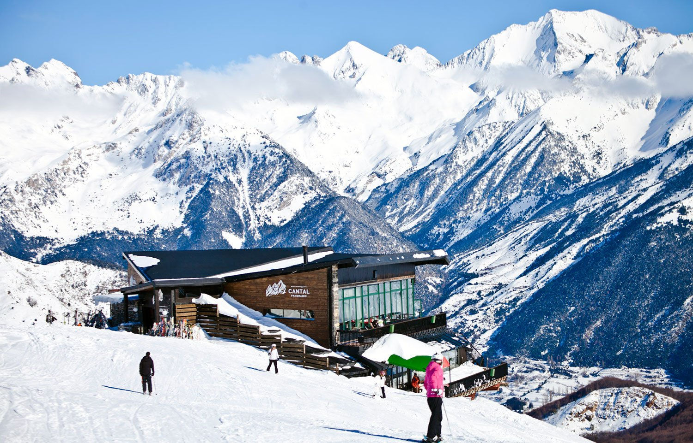

Formigal-Panticosa
Formigal-Panticosa es uno de los destinos de nieve más destacados en el Pirineo Aragonés. Con más de 180 km de pistas y un paisaje impresionante, ofrece una experiencia única para los amantes del esquí y los deportes de invierno. La estación está dividida en dos áreas principales: Formigal y Panticosa, ambas unidas por un sistema de teleféricos, lo que permite a los esquiadores disfrutar de una variedad de terrenos para todos los niveles, desde principiantes hasta expertos.
Formigal-Panticosa también es conocida por su ambiente moderno y servicios de alta calidad. Los visitantes pueden disfrutar de una gran variedad de actividades, como el snowpark, el esquí nocturno, o paseos en trineo. Además, la estación cuenta con una excelente oferta gastronómica y una infraestructura adaptada para garantizar la comodidad de los turistas.
No solo es un destino para los esquiadores, sino también para quienes buscan desconectar y disfrutar de la naturaleza, con diversas rutas de senderismo en invierno y verano. Su cercanía a la naturaleza y su excelente infraestructura hacen de Formigal-Panticosa un lugar perfecto para toda la familia.
Aramón Formigal-Panticosa
Edificio Sextas URB, 22640 Formigal, Huesca